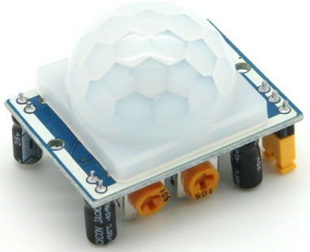

Nota
¡Hola! Bienvenidos a la comunidad de entusiastas de SunFounder para Raspberry Pi, Arduino y ESP32 en Facebook. Sumérgete en el mundo de Raspberry Pi, Arduino y ESP32 junto con otros apasionados.
¿Por qué unirse?
Soporte de Expertos: Soluciona problemas post-venta y desafíos técnicos con la ayuda de nuestra comunidad y equipo.
Aprende y Comparte: Intercambia consejos y tutoriales para mejorar tus habilidades.
Avances Exclusivos: Accede anticipadamente a anuncios de nuevos productos y adelantos.
Descuentos Especiales: Disfruta de descuentos exclusivos en nuestros productos más recientes.
Promociones y Sorteos Festivos: Participa en sorteos y promociones especiales en días festivos.
👉 ¿Listo para explorar y crear con nosotros? Haz clic en [Aquí] y únete hoy.
2.2.4 PIR
Introducción
En este proyecto, construiremos un dispositivo utilizando sensores piroeléctricos de infrarrojos para detectar el cuerpo humano. Cuando alguien se acerque al LED, este se encenderá automáticamente; de lo contrario, permanecerá apagado. Este sensor de movimiento por infrarrojos es capaz de detectar la radiación infrarroja emitida por personas y animales.
Componentes

Principio
El sensor PIR detecta la radiación de calor infrarrojo, que se usa para detectar la presencia de organismos que emiten este tipo de radiación.
El sensor PIR está dividido en dos ranuras conectadas a un amplificador diferencial. Cuando un objeto estático se encuentra frente al sensor, ambas ranuras reciben la misma cantidad de radiación y la salida es cero. En cambio, si un objeto en movimiento está frente al sensor, una de las ranuras recibe más radiación que la otra, lo que provoca que la salida oscile entre niveles altos y bajos. Este cambio en la salida es consecuencia de la detección de movimiento.
{kind=link}
Después de conectar el módulo de detección, hay un período de inicialización de un minuto. Durante este tiempo, el módulo emitirá señales entre 0 y 3 veces a intervalos. Luego, el módulo entrará en modo de espera. Mantén alejadas las fuentes de interferencia, como la luz y otros elementos, para evitar falsos positivos debido a señales externas. Es mejor utilizar el módulo en ausencia de corrientes de aire, ya que el viento también puede afectar el sensor.

Ajuste de Distancia
Girando el potenciómetro de ajuste de distancia en el sentido de las agujas del reloj, aumenta el rango de detección, con una distancia máxima de aproximadamente 0 a 7 metros. Si se gira en sentido contrario, el rango se reduce, con una distancia mínima de detección de alrededor de 0 a 3 metros.
Ajuste de Retardo
Girando el potenciómetro de ajuste de retardo en sentido horario, se incrementa el tiempo de retardo de detección, con un máximo de hasta 300 segundos. En cambio, si se gira en sentido antihorario, el retardo disminuye, con un mínimo de 5 segundos.
Dos modos de disparo (se eligen mediante el puente de configuración):
H: Modo de disparo repetible, después de detectar a una persona,
el módulo mantiene la salida en nivel alto. Durante el período de retardo, si alguien entra en el rango de detección, la salida continuará en nivel alto.
L: Modo de disparo no repetible, la salida se mantiene en nivel alto
solo mientras detecta a una persona. Después del retardo, cambia automáticamente de alto a bajo.
Diagrama de Circuito

Procedimientos Experimentales
Paso 1: Construye el circuito.

Paso 2: Accede a la carpeta del código.
cd ~/davinci-kit-for-raspberry-pi/c/2.2.4/
Paso 3: Compila el código.
gcc 2.2.4_PIR.c -lwiringPi
Paso 4: Ejecuta el archivo ejecutable.
sudo ./a.out
Después de ejecutar el código, el PIR detectará el entorno y hará que el LED RGB se ilumine en amarillo si detecta a alguien pasando. El módulo PIR tiene dos potenciómetros: uno para ajustar la sensibilidad y otro para la distancia de detección. Para un mejor funcionamiento, gíralos en sentido antihorario hasta el final.

Nota
Si no funciona tras ejecutar el código, o aparece el mensaje de error: "wiringPi.h: No such file or directory», consulta c code is not working?.
Código
#include <wiringPi.h>
#include <softPwm.h>
#include <stdio.h>
#define uchar unsigned char
#define pirPin 0 //el pir se conecta a GPIO0
#define redPin 1
#define greenPin 2
#define bluePin 3
void ledInit(void){
softPwmCreate(redPin, 0, 100);
softPwmCreate(greenPin,0, 100);
softPwmCreate(bluePin, 0, 100);
}
void ledColorSet(uchar r_val, uchar g_val, uchar b_val){
softPwmWrite(redPin, r_val);
softPwmWrite(greenPin, g_val);
softPwmWrite(bluePin, b_val);
}
int main(void)
{
int pir_val;
if(wiringPiSetup() == -1){ //si inicializar wiring falla, imprime mensaje en pantalla
printf("setup wiringPi failed !");
return 1;
}
ledInit();
pinMode(pirPin, INPUT);
while(1){
pir_val = digitalRead(pirPin);
if(pir_val== 1){ //si la lectura de pir es nivel ALTO
ledColorSet(0xff,0xff,0x00);
}
else {
ledColorSet(0x00,0x00,0xff);
}
}
return 0;
}
Explicación del Código
void ledInit(void);
void ledColorSet(uchar r_val, uchar g_val, uchar b_val);
Estas funciones configuran el color del LED RGB. Consulta 1.1.2 LED RGB para más detalles.
int main(void)
{
int pir_val;
//……
pinMode(pirPin, INPUT);
while(1){
pir_val = digitalRead(pirPin);
if(pir_val== 1){ //si la lectura de pir es nivel ALTO
ledColorSet(0xff,0xff,0x00);
}
else {
ledColorSet(0x00,0x00,0xff);
}
}
return 0;
}
Cuando el PIR detecta el espectro infrarrojo humano, el LED RGB emite luz amarilla; de lo contrario, emite luz azul.